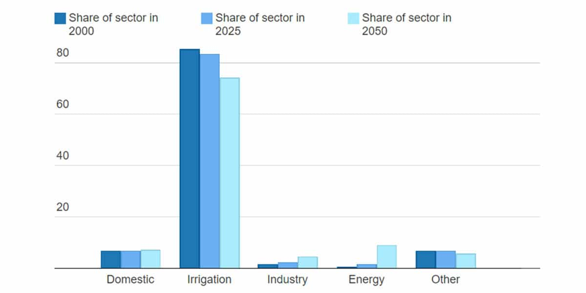
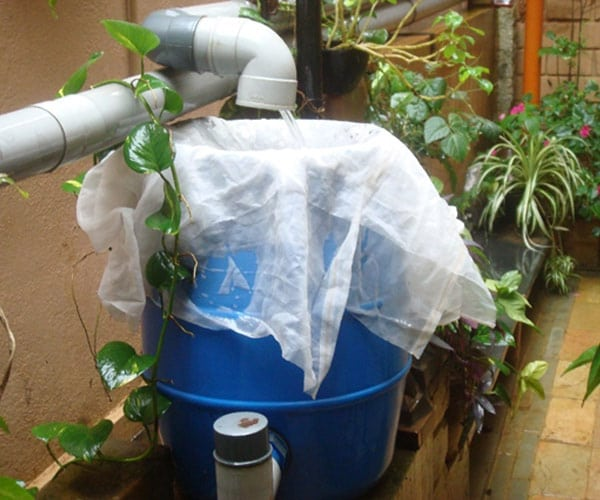

Sector-wise need for water conservation through Rainwater Harvesting in India
Water stress is real in a populous country like ours and hence each sector needs to understand the importance of rainwater conservation. Let us take a walkthrough.
Conservation is a core concept for sustainable development. Even the technological advances around the world are focused on the idea of conservation. Big or small, all businesses are trying to reduce their carbon footprints by switching to eco-friendly and environment conserving ideas. From inventing public electric transport to using Hydrogen in the energy transition, the world’s best brains are getting together to achieve the mission of sustainable development.
Amongst all these ideas, the practice of water conservation through rainwater harvesting is something every single soul on the earth will be able to undertake. On average, each person in India uses about 80-100 gallons of water per day, for indoor home uses. Also, around 40 billion of water is consumed by industries in India, as per the Ministry of Water Resources.

Source: Central water commission
There is a decline in the per capita availability of freshwater from 3,000 cubic metres to 1,123 cubic metres over the past 50 years. The demand for water in urban areas is exceeding its supply, thus creating severe water stress.
Harvesting rain, with the use of tools and arrangement of materials, for personal or commercial use, is the basic definition of rainwater harvesting and an essential solution for the water availability issue at hand.
Rainwater Harvesting in the irrigation sector
Irrigation takes up over 80% of the total water usage of our country. And over 60% of this water comes from groundwater, which is inexpedient exploitation of the aquifers, leading to dangerously low levels.
Our agriculture majorly relies upon rainfall precipitation as well as for recharging the groundwater. 58% of our country’s annual groundwater recharge is contributed by Monsoons while other sources like seepage from canals, tanks, ponds, etc. constitute the remaining 32%.
Thus, employing rainwater harvesting techniques on the fields will help in revitalizing dried up borewells, recharge local aquifers and create water banks in drought areas.
For small-scale agriculture, the following methods are recommended:
- Rain barrels
- Dry systems
- Wet systems
- Green roof
Rainwater Harvesting for domestic water conservation
Urban living has increased the demand for water use for domestic purposes. The homes in advanced cities, for instance, are using modern-day equipment like a dishwasher and automatic washing machine, which use more water than traditional methods. Additionally, the luxury practice of using a shower or water tub for bathing is also leading to more water usage as well as wastage.
Having said that, a well-designed water conservation structure is needed to be placed in every house of our country.
Cities like Bengaluru are facing water scarcity because of rapid urbanization, a swelling population, and ill-management of water sources. The old and corroded pipes are responsible for more than 20% loss of water due to leaks while water transportation to homes. The Bangalore Water Supply and Sewerage Board can only provide drinking water to 60% of the city. This is creating a profitable business for private water tank owners, who are again exploiting the groundwater reserves to provide water in large residential societies.
There is a dire need for water conversation at individual levels. Voluntary initiatives and legal reforms for rainwater harvesting together, can help in regulating the depleting levels of groundwater and stop the sole dependency on rivers & local aquifers. Some states in India are mandating rainwater harvesting for a certain measure of sites. Borewell recharge has become a mandate for all sites above 30X40 in Bangalore and other cities.
- At a personal household level, we can install a simple rainwater harvesting system on the rooftops of our independent houses as well as on complex housing societies.
- The practice of storing rainwater in a sump or tank is highly economical as it is free and one gets the purest form of water.
- Not only on roofs but rainwater harvesting structures can be installed on balconies, porches, and other open areas where raindrops can be captured.
- Install a rain barrel.

- Rain gardens can be made as a sunken landscape where the use of native plants, local soil, and mulch is used to remove pollutants from the soil and let the water percolate into the soil.
- A recharge pit for borewells is another effective way to push back the surface water into the groundwater system.
The major idea here is to create an arrangement of downpipes that are directed towards a storage facility like a sump or a tank.
Rainwater Harvesting for commercial sites & industries
Commercial buildings refer to the office complex, educational institutions, shopping malls, theatres, and activity centres. These places have continuous water use and a high amount of water wastage.
As per water usage, few industries (power generation, textiles & garments, beverage, etc.) have more demand than others.
To handle the water conservation issue in commercial buildings, almost every state has made it mandatory for the building owners to install a rainwater harvesting system on the premises. The regulatory area of the site differs in each state, but universal methods have been followed throughout. Any disobedience to the rule may lead to the cancellation of the structure and service licenses.
Commercial buildings and industries can use surface runoff as well as rooftop rainwater harvesting. Most of the non-potable water requirements like toilet flushing, laundering, gardening, etc. are fulfilled using these systems. The efforts can reduce mains water supply by 40-50% and reduces the run-off and its harmful impacts.
Rainwater Harvesting & Green Building Consultancy at N.S. & Associates
Green building certificates in India are mainly offered by USGBC, IGBC and GRIHA on the criteria of Water & Energy Efficiency, Consumption of materials & Natural Resources and reduction in waste, pollution. We have helped many of our prestigious clients to earn Platinum Certifications from regulatory authorities in Green Building initiatives.
Our rainwater harvesting and green building consultancy have not just helped property owners to save a fortune over resources and cost but contributed towards sustainable development.